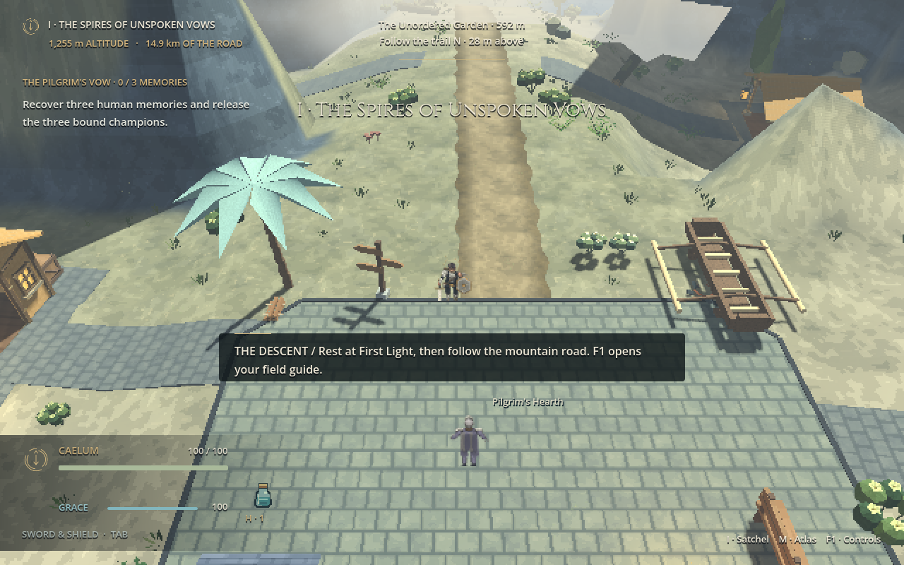
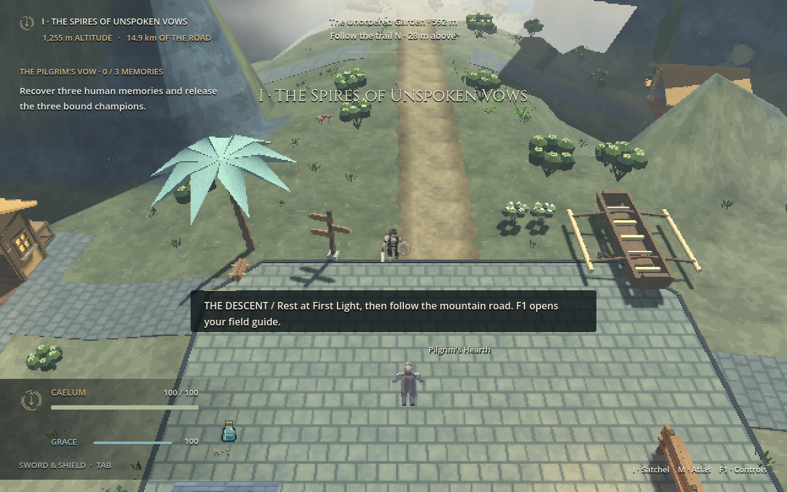
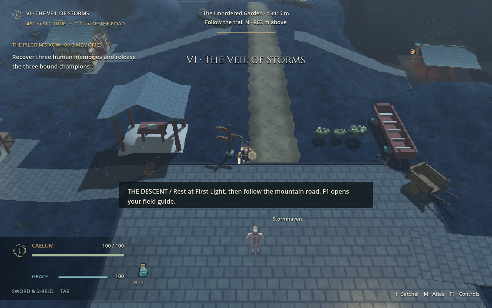
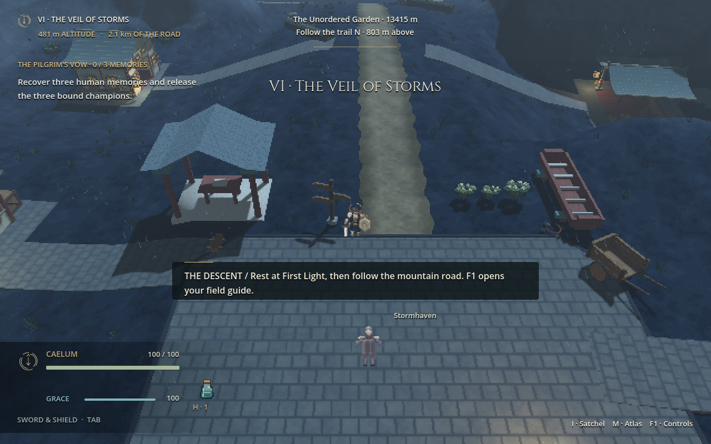
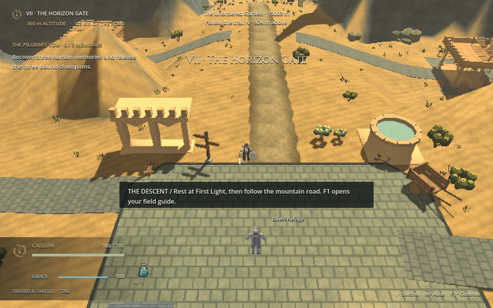
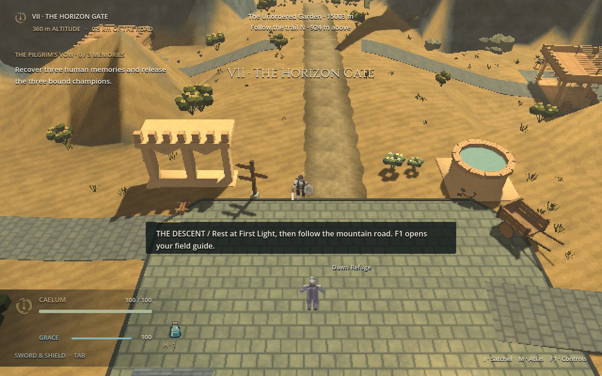
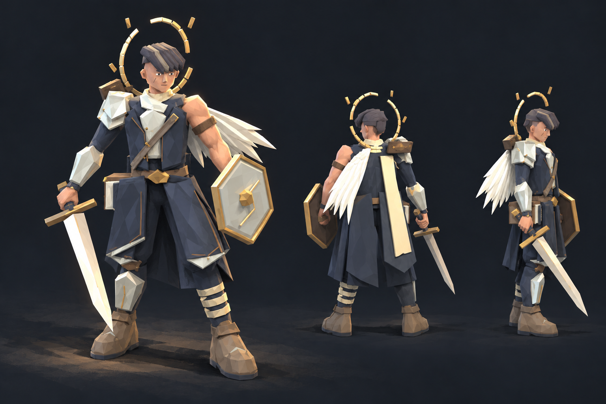
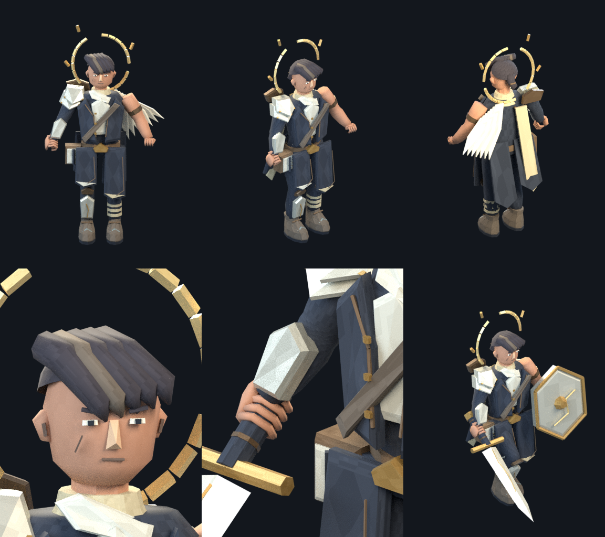
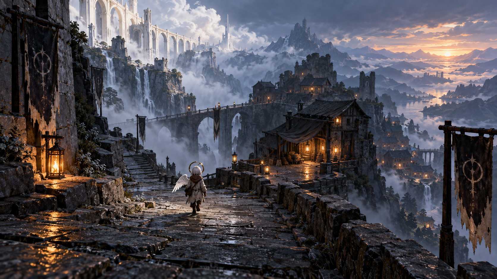

Pilgrim's Hearth · upper Firmament
Cooler pearl light, more moss in the pale gravel, and fuller planted edges.




DOWNFALL · Graphics and gameplay ·
The playable world now has more varied ground, grouped planting around refuges, and light that changes more clearly between Heaven's pale heights, blue storm country, and the warm lower horizon.
The before-and-after frames below are native Godot captures from identical gameplay cameras. The character and world studies farther down are original concept images, clearly separated from implemented assets.
See the world changes01 / The running world
Terrain colors and broad material variation give the mountain more shape. Deterministic shrubs and trees gather outside the roads, house terraces, water and combat courts. Each region keeps its own light and weather.
Cooler pearl light, more moss in the pale gravel, and fuller planted edges.


The route stays clear through blue rain. Warm light now reaches the house approaches from the exterior lanterns. See the closer native view.


Warm light remains distinct from Stormhaven, with less washed-out sand and larger shrub groups.


02 / Character direction
His broken halo, single wing, layered coat, sword and shield need to read from the elevated 2.5D camera. The Blender model was revised for that silhouette and rebuilt into the playable directional sprite packs. The illustrated study explores the same identity; it is not an in-game render.


03 / Longer view
This original world image is a composition study for the path, refuge and distant descent. It is not a screenshot or a generated game level.

04 / In motion
The 90-second native capture shows the latest world, Caelum's playable sprites, travel, Gracefall and fights with Daran, Maelis and Raigen. It combines staged views with real game movement and combat.
The complete campaign and arrival on Earth remain in development. This update changes presentation and world detail while keeping the existing committed combat systems.